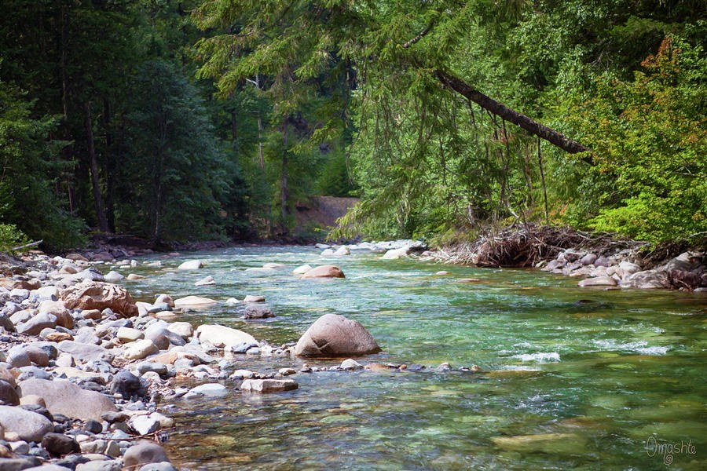

The Library · Omaste Witkowski
The Water in This Forest River Glows Against the Dark Evergreens
Green Bend is a landscape photograph of a clear, shallow river with translucent turquoise-green water, a pale stone bank and one large boulder in the current.

Choose your size, paper, canvas, metal or frame. Printed, shipped and guaranteed by Fine Art America.
Start with the water. It runs clear and shallow, a translucent green-turquoise, and you can see the pebbled streambed through it. Around it the forest is almost black-green, so the river looks lit from within.
That is the first thing I want you to notice about Green Bend. Most forest river pictures are all green or all water. This one holds both: bright, glassy water against deep shade, with pale boulders catching the light.
Choose Your Print on FAAMade to order by Fine Art America · 30-day money-back guarantee
What your eye finds, in the order you find it
The glow comes first. Then your eye settles on the one large rounded boulder standing in the current near the center. It anchors the picture, and the water moves around it.
From there the river pulls you in two directions. In the lower right, small white ripples break across the current. In the other direction, the river curves away toward a bend in the valley, and you follow it from the stony foreground into the distance.
Look again and the smaller things appear. A leaning tree crosses the upper right on a diagonal. Dark evergreens frame the left and top. A tangle of dry roots and driftwood sits along the far bank, and a few rust and orange-red leaves in the sun add warmth to all that green.
The light is soft and even, with the canopy in shade. The brightest spots are on the water, the pale stones and the sunlit leaves on the right bank. The finish is slightly painterly, so the scene reads as calm and unhurried.
What to look for up close
- Translucent turquoise-green water with the streambed showing through: it gives the picture a bright focal point that the eye returns to.
- Deep forest green, dark olive and moss green: a dark, low-key palette that adds depth to a light wall.
- One large rounded boulder near the center: a quiet anchor that keeps the wide view steady.
- Smooth gray and tan stones on the left bank: a pale, textured foreground that catches the light against the dark trees.
- A curving river and a diagonal leaning tree: they lead the eye from the front of the picture to the bend in the valley.
- Rust brown and orange-red leaves, white ripples: small touches of warmth and movement in a cool scene.
Where it belongs
Green Bend is a horizontal landscape, so it suits a wide wall space: above a sofa, a console, a mantel or a bed, or behind a desk. The dark greens give a light wall some depth. The bright water gives the eye a place to rest.
It sits comfortably in a living room, bedroom, study or lodge-style space. The mood is calm, quiet and fresh, and it comes from the scene itself: a wooded riverside with nothing hurried in it.
- This is for you if you want river art where the water is the star, clear turquoise-green against a very dark evergreen forest.
- This is for you if you like a low-key palette of forest green, olive and moss, warmed by rust and orange-red.
- This is for you if you like texture: smooth stones, feathery boughs, dry roots and driftwood.
- This is for you if you simply like looking at it. A beautiful river is reason enough.
Choose your print on Fine Art America
- Green Bend, Forest River With Boulder, offered as a print made to order by Fine Art America.
- Your choice of size, paper, canvas, metal or frame, picked on the listing.
- A 30-day money-back guarantee from Fine Art America.
- Shipped from their facility, typically within a few business days.
- Artwork by Omaste Witkowski.
Choose Your Print on FAAMade to order by Fine Art America · 30-day money-back guarantee
Questions before you choose
Where was this photographed?
I haven't named the river or the location on this page, so I won't guess. The listing describes only what is in the image.
Will such a dark picture work on my wall?
The forest is deep and shaded, but the water and pale stones are bright. That contrast is why it adds depth to a light wall without feeling flat. The guarantee covers you if it doesn't look right in your room.
What sizes and finishes can I get?
The listing shows the sizes and finishes available, including paper, canvas, metal and framed options. I make no claim about a maximum size here, so check the sizes shown on the listing.
Picture the river over your sofa or mantel: green-turquoise water against the dark trees, a boulder standing in the current, and the bend in the valley drawing your eye back each time you pass.
When you're ready, open the Fine Art America listing and choose the size and finish that suit your wall.
Choose Your Print on FAAMade to order by Fine Art America · 30-day money-back guarantee
Find your own piece with the art adventure · Ask the gallery what fits your wall